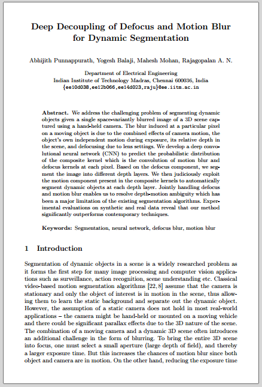

Abhijith Punnappurath Yogesh Balaji Mahesh Mohan A. N. Rajagopalan
Indian Institute of Technology Madras, India
|
Abstract
We address the challenging problem of segmenting dynamic objects given a single space-variantly blurred image of a 3D scene captured using a hand-held camera. The blur induced at a particular pixel on a moving object is due to the combined effects of camera motion, the object’s own independent motion during exposure, its relative depth in the scene, and defocusing due to lens settings. We develop a deep convolutional neural network (CNN) to predict the probabilistic distribution of the composite kernel which is the convolution of motion blur and defocus kernels at each pixel. Based on the defocus component, we segment the image into different depth layers. We then judiciously exploit the motion component present in the composite kernels to automatically segment dynamic objects at each depth layer. Jointly handling defocus and motion blur enables us to resolve depth-motion ambiguity which has been a major limitation of the existing segmentation algorithms. Experimental evaluations on synthetic and real data reveal that our method significantly outperforms contemporary techniques.
Downloads
|  |
"Deep Decoupling of Defocus and Motion Blur for Dynamic Segmentation" Abhijith Punnappurath, Yogesh Balaji, Mahesh Mohan, A. N. Rajagopalan European Conference on Computer Vision (ECCV) Amsterdam, the Netherlands, October 2016 |
BibTex
@inproceedings{punnappurath_eccv2016,
author = {Abhijith Punnappurath and Yogesh Balaji and Mahesh Mohan and A. N. Rajagopalan},
title = {Deep Decoupling of Defocus and Motion Blur for Dynamic Segmentation},
booktitle = {Proceeding of the European Conference on Computer Vision},
year = {2016}
}